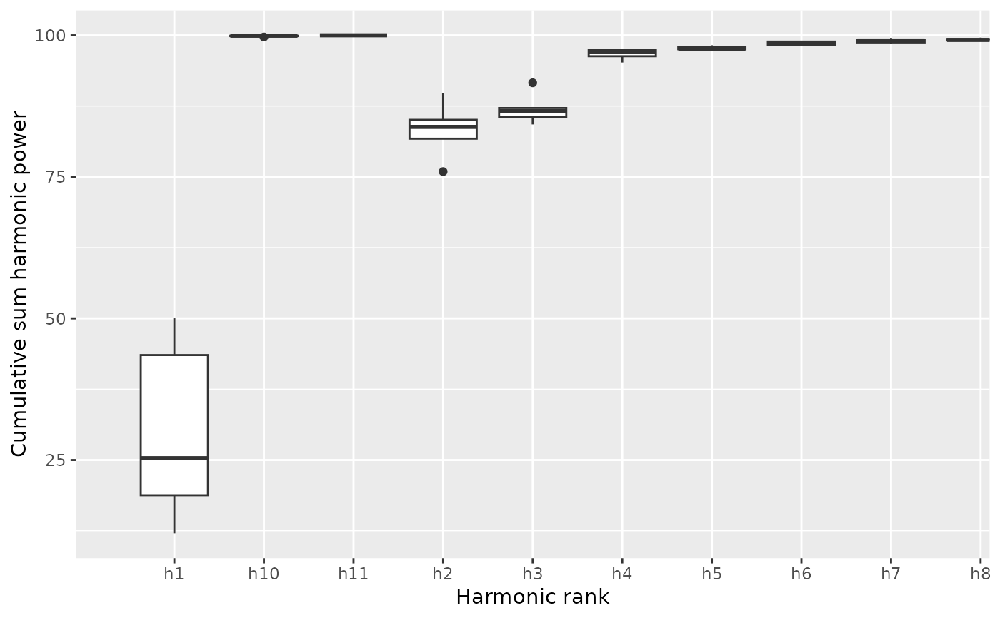

Quantitative calibration, through harmonic power, for Out and Opn objects
Source:R/core-calibrate.R
calibrate_harmonicpower.RdEstimates the number of harmonics required for the four Fourier methods
implemented in Momocs: elliptical Fourier analysis
(see efourier), radii variation analysis (see rfourier)
and tangent angle analysis (see tfourier) and
discrete Fourier transform (see dfourier).
It returns and can plot cumulated harmonic power whether dropping
the first harmonic or not, and based and the maximum possible number
of harmonics on the Coo object.
calibrate_harmonicpower() calibrate_harmonicpower_efourier( x, id = 1:length(x), nb.h, drop = 1, thresh = c(90, 95, 99, 99.9), plot = TRUE ) calibrate_harmonicpower_rfourier( x, id = 1:length(x), nb.h, drop = 1, thresh = c(90, 95, 99, 99.9), plot = TRUE ) calibrate_harmonicpower_tfourier( x, id = 1:length(x), nb.h, drop = 1, thresh = c(90, 95, 99, 99.9), plot = TRUE ) calibrate_harmonicpower_sfourier( x, id = 1:length(x), nb.h, drop = 1, thresh = c(90, 95, 99, 99.9), plot = TRUE ) calibrate_harmonicpower_dfourier( x, id = 1:length(x), nb.h, drop = 1, thresh = c(90, 95, 99, 99.9), plot = TRUE )
Arguments
| x | a |
|---|---|
| id | the shapes on which to perform calibrate_harmonicpower. All of them by default |
| nb.h | numeric the maximum number of harmonic, on which to base the cumsum |
| drop | numeric the number of harmonics to drop for the cumulative sum |
| thresh | vector of numeric for drawing horizontal lines, and also used for
|
| plot | logical whether to plot the result or simply return the matrix
Silent message and progress bars (if any) with |
Value
returns a list with component:
gga ggplot object,qthe quantile matrixminha quick summary that returns the number of harmonics required to achieve a certain proportion of the total harmonic power.
Details
The power of a given harmonic \(n\) is calculated as follows for elliptical Fourier analysis and the n-th harmonic: \(HarmonicPower_n \frac{A^2_n+B^2_n+C^2_n+D^2_n}{2}\) and as follows for radii variation and tangent angle: \(HarmonicPower_n= \frac{A^2_n+B^2_n+C^2_n+D^2_n}{2}\)
See also
Other calibration:
calibrate_deviations(),
calibrate_r2(),
calibrate_reconstructions
Examples
#> $gg#> #> $q #> h1 h2 h3 h4 h5 h6 h7 #> brahma 12.04060 75.93567 84.25707 96.30510 97.54758 98.98871 99.14762 #> caney 25.32919 83.82352 85.52977 97.63251 97.95722 98.48376 98.74498 #> chimay 43.52623 81.74374 87.15624 95.19669 97.62725 98.26072 99.08266 #> corona 18.77387 85.07047 86.60786 97.10591 97.52603 98.19450 98.53979 #> deusventrue 50.01648 89.72983 91.60975 97.48378 98.24316 98.89288 99.54427 #> h8 h9 h10 h11 #> brahma 99.17820 99.56150 99.70128 100 #> caney 99.09524 99.82995 99.92629 100 #> chimay 99.13936 99.92633 99.95030 100 #> corona 99.35699 99.85405 99.92437 100 #> deusventrue 99.59558 99.85220 99.85638 100 #> #> $minh #> 90% 95% 99% 99.9% #> 5 5 8 11 #>b5 %>% calibrate_harmonicpower_rfourier(nb.h=12)#> $gg#> #> $q #> h1 h2 h3 h4 h5 h6 h7 #> brahma 18.78231 33.31995 46.22113 58.10127 67.82970 75.05028 80.97400 #> caney 17.93853 31.33704 42.78188 53.62717 63.27019 70.92538 77.13956 #> chimay 20.15608 32.00851 42.30386 53.69956 63.83688 70.62474 75.70937 #> corona 18.06902 31.19196 42.46484 53.47544 63.40792 71.15173 77.21493 #> deusventrue 16.53275 28.35109 38.13251 47.97348 57.90690 66.78889 74.09914 #> h8 h9 h10 h11 #> brahma 86.70633 92.03264 96.35923 100 #> caney 83.17596 89.45355 95.26884 100 #> chimay 81.97629 89.53235 95.96736 100 #> corona 83.10189 89.40501 95.31295 100 #> deusventrue 80.55553 87.12697 93.87388 100 #> #> $minh #> 90% 95% 99% 99.9% #> 11 11 12 12 #>b5 %>% calibrate_harmonicpower_tfourier(nb.h=12)#> $gg#> #> $q #> h1 h2 h3 h4 h5 h6 h7 #> brahma 59.14067 61.93044 70.84946 73.04960 78.52305 82.00362 83.54236 #> caney 74.23211 77.03198 79.47862 80.42583 81.02169 83.35008 88.47033 #> chimay 51.55592 60.87755 75.55970 82.94807 85.87674 86.60314 87.96999 #> corona 78.37418 84.46833 88.93940 91.30081 91.99456 92.38160 96.07474 #> deusventrue 57.24983 77.47110 86.13551 88.20041 90.42190 93.82247 94.37464 #> h8 h9 h10 h11 #> brahma 88.78847 90.73935 95.65795 100 #> caney 92.95646 93.61725 99.86646 100 #> chimay 95.63758 95.97542 98.66043 100 #> corona 96.39414 97.01762 99.03821 100 #> deusventrue 97.00523 98.45247 99.28416 100 #> #> $minh #> 90% 95% 99% 99.9% #> 9 9 11 12 #>b5 %>% calibrate_harmonicpower_sfourier(nb.h=12)#> $gg#> #> $q #> h1 h2 h3 h4 h5 h6 h7 #> brahma 99.38619 99.44134 99.59446 99.83182 99.92895 99.93156 99.94529 #> caney 99.16488 99.60429 99.82594 99.87251 99.91648 99.95231 99.95269 #> chimay 97.21123 99.21819 99.30029 99.82089 99.87238 99.93107 99.95593 #> corona 99.36094 99.61770 99.72283 99.76601 99.89668 99.95608 99.95715 #> deusventrue 97.32291 99.46403 99.50564 99.53357 99.60031 99.93841 99.94526 #> h8 h9 h10 h11 #> brahma 99.98484 99.98487 99.98688 100 #> caney 99.99360 99.99611 99.99624 100 #> chimay 99.99704 99.99727 99.99749 100 #> corona 99.98672 99.99443 99.99756 100 #> deusventrue 99.97166 99.97681 99.99946 100 #> #> $minh #> 90% 95% 99% 99.9% #> 2 2 2 7 #>#> $gg#> #> $q #> h1 h2 h3 h4 h5 h6 #> 0001-cAglan_O10VD 82.53723 88.47281 96.36372 96.81316 98.24342 98.36453 #> 0001-cAglan_O10VL 73.05735 86.54342 94.76133 95.98041 97.40877 97.59487 #> 0001-cAglan_O11VD 76.24284 87.88560 93.49305 94.48904 96.36358 96.62580 #> 0001-cAglan_O11VL 84.21060 91.19903 96.81949 97.09514 98.06219 98.13718 #> 0001-cAglan_O12VD 83.66767 87.90200 95.83034 95.91726 97.55019 97.57227 #> h7 h8 h9 h10 h11 #> 0001-cAglan_O10VD 98.95059 98.99292 99.48780 99.50151 100 #> 0001-cAglan_O10VL 98.45031 98.49851 99.23945 99.26011 100 #> 0001-cAglan_O11VD 97.63205 97.76921 98.91878 99.00197 100 #> 0001-cAglan_O11VL 98.80533 98.83142 99.42881 99.43860 100 #> 0001-cAglan_O12VD 98.59264 98.60478 99.36939 99.37605 100 #> #> $minh #> 90% 95% 99% 99.9% #> 4 4 10 12 #>if (FALSE) { # let customize the ggplot library(ggplot2) cal <- b5 %>% calibrate_harmonicpower_efourier(nb.h=12) cal$gg + theme_minimal() + coord_cartesian(xlim=c(3.5, 12.5), ylim=c(90, 100)) + ggtitle("Harmonic power calibration") }